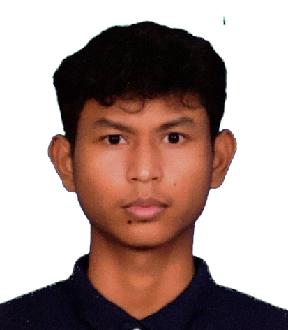
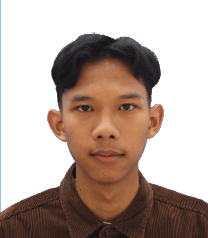

About TechPath Expert
An intelligent IT career guidance system built to help Malaysian students and graduates discover their best-fit tech career path — powered by Forward Chaining logic.
What is an Expert System?
TechPath is a Rule-Based Expert System that emulates the decision-making process of a seasoned IT career counsellor. It was designed specifically to bridge the gap between academic knowledge and real-world career expectations.
Instead of guessing, the system uses logical inference rules derived from actual industry knowledge to produce accurate, personalised career recommendations tailored to the Malaysian tech landscape.
Diploma & Degree Students Only — This system is designed specifically for students and graduates at Diploma or Bachelor's Degree level who are exploring IT career pathways in Malaysia.
How Does It Work?
A 5-stage pipeline from user input to personalised career recommendation
Data Collection
Users complete a structured assessment covering Interests, Skills, Personality, Academic Background, and Technology Exposure.
Inference Engine
The Forward Chaining engine fires rules sequentially — starting from known facts and deriving new conclusions until a final match is reached.
Rule Matching
Your profile is compared against 135 IF-THEN rules. Each matching rule adds weight to candidate careers, building a ranked score list.
Knowledge Base
Scores are matched against a curated knowledge base of 18 Malaysia-relevant IT careers with salary data, skills, and certifications.
Career Roadmap
The top-matching career is presented with a full learning roadmap, recommended tools, and certification pathways to get you started.
How The System Resolves Conflicts
When multiple rules fire for multiple careers at once, how does TechPath decide the winner?
In rule-based Expert Systems, it is common for multiple rules to fire simultaneously, sometimes pointing toward different conclusions. TechPath resolves this using an Additive Weighted Scoring strategy — rather than letting the first matching rule win, or relying on a fixed priority order, every rule that fires contributes its weight to a running total for its associated career. The career with the highest accumulated score across all 135 rules is selected as the final recommendation.
Even though both careers had rules firing, AI Engineer wins because more independent pieces of evidence (interest, skill, personality, and academic synergy) pointed toward it — not because of rule order in the code. This is the same logic shown to the user in the "Why This Career?" explanation facility on the results page.
Why Additive Scoring Over Other Strategies?
| Strategy | Description | Why Not Used Here |
|---|---|---|
| First Match | Stops at the first rule that fires; ignores every rule after it. | Results would depend on rule order in the code, not the actual strength of the user's profile. |
| Priority Ordering | Rules are ranked by fixed priority; the highest-priority match wins outright. | Ignores supporting evidence — a career with one high-priority rule would always beat a career with five well-rounded moderate matches. |
| Means-End Analysis | Works backward from a goal state, selecting rules that reduce the gap to that goal. | Suited for planning/goal-seeking problems, not classification-style profile matching like career recommendation. |
| Additive Weighted ScoringUSED | Every fired rule contributes its weight; the career with the highest cumulative score wins. | Rewards consistent, multi-dimensional evidence (interest + skill + personality + academic background) — which mirrors how real career fit is actually judged. |
Meet The Developers
The brilliant minds behind TechPath Expert System

